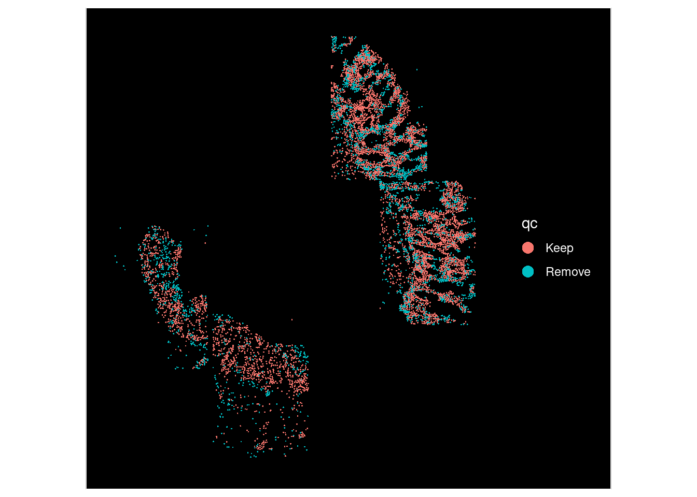

12 Clustering Labeling
Classifing cells into meaningful celltypes (or cell states) is a time consuming, but extremely improtant, part of a spatial analysis.
It may involve pulling together multiple lines of evidence to assign celltype labels to cluster labels. Some approaches outlined below:

12.3 Spatial examination of plots
The clusters were defined purely on transcriptional similarity, but when plotted on tissue, their location pattern emerges. Here we can see that cluster 1 is epithelial cells.
Plotting both whole sample, and a zoomed in region of just one of the FOVs (in the cosmx definition) within it.
so_sample <- so[, so$tissue_sample=="HC_a"]## Warning: Not validating FOV objects## Warning: Not validating Centroids objects
## Not validating Centroids objects## Warning: Not validating FOV objects## Warning: Not validating Centroids objects## Warning: Not validating FOV objects
## Not validating FOV objects
## Not validating FOV objects## Warning: Not validating Seurat objects
## Not validating Seurat objects
## Not validating Seurat objects
## Not validating Seurat objects
## Not validating Seurat objects
## Not validating Seurat objects
ImageDimPlot(so_sample,
fov = "GSM7473682_HC_a",
axes = TRUE,
border.color = NA, border.size = 0.1,
group.by = "seurat_clusters",
boundaries = "segmentation",
crop=TRUE,
nmols = 10000)
so_fov <- so_sample[, so_sample$fov==1]## Warning: Not validating FOV objects## Warning: Not validating Centroids objects
## Not validating Centroids objects## Warning: Not validating FOV objects## Warning: Not validating Centroids objects## Warning: Not validating FOV objects
## Not validating FOV objects
## Not validating FOV objects## Warning: Not validating Seurat objects
ImageDimPlot(so_fov,
fov = "GSM7473682_HC_a",
axes = TRUE,
border.color = NA, border.size = 0.1,
group.by = "seurat_clusters",
boundaries = "segmentation",
crop=TRUE,
nmols = 10000)
12.4 Recording celltype annotations.
## Apply some cluster names
so$cluster_code <- factor( paste0("c", so$seurat_clusters), levels=paste0('c', levels(so$seurat_clusters)))
Idents(so) <- so$cluster_code
# Will pick some sensible names later, onces settled.
# PIGR is a marker of intestinal epithelial, and very obviously epithelial.
cluster_content <- list(
c0 = "Stromal",
c1 = "IntestinalEpithelia",
c2 = "CollagenRich",
c3 = "Immuneish",
c4 = "test",
c5 = "fixme"
)
# c5 => c5: Mono
so$celltype <- factor (
paste0(names(cluster_content[as.character(so$cluster_code)]), ": ", cluster_content[as.character(so$cluster_code)]) ,
levels = paste0( names(cluster_content), ": ", cluster_content)
)
DimPlot(so, group.by='celltype')From there, plots look more interesting.
## Celltype proportions
celltype_summary_table<- so@meta.data %>% as_tibble() %>%
group_by(condition, tissue_sample, celltype ) %>%
summarise(n_cells = n())## `summarise()` has grouped output by 'condition',
## 'tissue_sample'. You can override using the
## `.groups` argument.
ggplot(celltype_summary_table, aes(x=tissue_sample, y=n_cells, fill=celltype)) +
geom_bar(position="fill", stat="identity") +
theme_bw() +
coord_flip() +
theme(legend.position = "bottom") +
scale_y_continuous(expand = c(0,0)) +
ggtitle( "Celltype composition") +
facet_wrap(~condition, ncol = 1, scales = 'free_y')